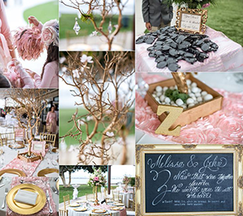

My Story...

My journey to become a web developer and graphic designer has been an interesting one. I never imagined I would be working in this industry, and enjoying all the new skills I learn on a daily basis. This is a really exciting industry, and I look forward to growing my skillset and adding value to the company I work for.
It was December of 2006, and I was in my senior year of college,graduating with a 4 year business degree from the University of Central Arkansas. Like most new graduates with the world at their fingertips, I was struggling with what to do with my career. There were so many options. My dad was a computer programmer, my mom was a teacher, and they had taught me the value of education and hard work. But what was I supposed to do now?
It just so happened that around this same time, I was in need of a another vehicle. A gentleman that I knew that was a car dealer offered to take me to a local auto auction, so I could get a good deal. From the moment I walked in the door, I was addicted. I started to regularly buy and sell cars, and was soon making a full time income.
Fast forward to 2010. I'm sitting in the office of a 14,000 sq foot building in the middle of 4 acres of cars, trucks, and suvs. Not only was I employed there, I was the owner. By working hard and learning the industry, in four years my team and I had built the largest independent dealership in Central Arkansas. In the years that followed, we continued to build the dealership, learning many lessons in leadership, management,sales, and teamwork along the way.
On July 21, 2012, my whole life changed and would never be the same. I met this beautiful girl sunny San Diego, California. I fell in love with her, and have been ever since. I started to make regular trips out to San Diego, and I really liked the city.  She was in law school at California Western School of Law at the time, so we had to wait until she graduated to get married. A year later, we married in Point Loma. Marrying her was definitely the best decision I've ever made. In July of this year, we will celebrate our sixth anniversary. The last six years has been the best part of my journey. Last month we found out that we are expecting our first child, due on July 25th.
In October of 2015, I sold the dealership that I had owned for almost 10 years. I started working at Steve Landers Toyota, one of the largest Toyota dealership in a five state region. Being a people person, I naturally excelled in this role, both with my team and customers. In October of 2016, I was awarded the Salesman of the Month award out of a 50+ person sales team, based on both profit and total sales. Working at Steve Landers Toyota was a valuable and rewarding experience, and I met a lot of wonderful people along the way.
While working at Landers, my wife and I had discussed moving to San Diego. The hours I had been working were long, and sometimes I wouldn't get home until 10pm at night. She not only missed her hometown, she also missed being near her family. We were both ready for a new chapter in our life. In May of 2017, we made our journey to San Diego.

In 2014, my wife and I started a fashion IG account named Skirted Fancy. She was the model, I was the photographer. Our IG grew from zero to over 80K followers. Almost every weekend since has been full of her modeling and me taking lifestyle and product photography.
 We launched a Shopify store and sell denim skirts that she designs. I am very active on a daily basis growing our Shopify store, Instagram, and handling logistics.
We launched a Shopify store and sell denim skirts that she designs. I am very active on a daily basis growing our Shopify store, Instagram, and handling logistics.
My research led me to the technology industry, and then specifically to graphic design and front end web development. I found that the employment of web developers was projected to grow 27% from 2014 to 2024, and the demand for developers continued to climb along with the internet. I had always enjoyed computers, although I didn't know how to code or use the Creative Cloud at that point.

In July of 2018, I started my education to learn graphic design. I started the Interactive Media Certificate Program at San Diego Continuing Education. This course was a big time commitment and I have been a full time student since then. Interactive Media consists of three modules: Print, which includes Adobe Photoshop, Illustrator, and inDesign. Multimedia, which includes Garageband, Audacity, Audition, Adobe After Effects, and Premiere Pro. and Web, which includes Wordpress and Dreamweaver. This program has changed my life and I enjoy working in all Adobe's Creative Cloud programs. Over the three modules, I was in class for 2,625 hours over 36 weeks. I completed the Interactive Media program in January of 2018 with a certificate in each module.

Along with Interactive Media, I started the Front End Web Development Certificate Program in the Fall of 2018. The web developer program is divided into two parts, Front End Web Developer I, and II. Front End Web Developer I covers all the topics related to HTML5, CSS3, designing protypes with Azure RP Pro and Photoshop, and SEO. It lasted for 18 weeks and consisted of over 13 projects coded in Brackets, 10 quizzes, one final project, and one final exam. For the final project, we created a new, functional 10-page website for a local San Diego business by creating Low, Medium, and High Fidelity prototypes using Azure RP Pro, and Photoshop. Then we turned those prototypes into code with Brackets using the CSS Grid system and launching a live website online. The end project is available on github.

Front End Web Developer II, which lasts for the next 18 weeks, primarily covers Javascript, but it also covers other aspects a Full Stack Developer would be skilled in, including jQuery, SASS, JSON, AngularJS, NodeJS, React.js, and Vue.js. This program helps you develop the advanced developer skills that you need to thrive in the workplace.
My goal as a designer and developer is to continue to develop my skillset that would make me more valuable in the industry. I am searching for company where I can grow as a developer and learn advanced skills, while being an asset to the company and adding to its growth.